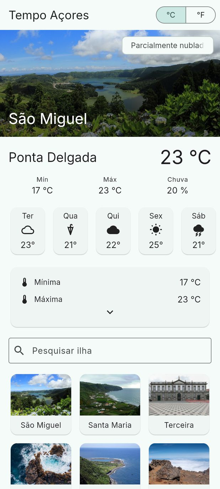
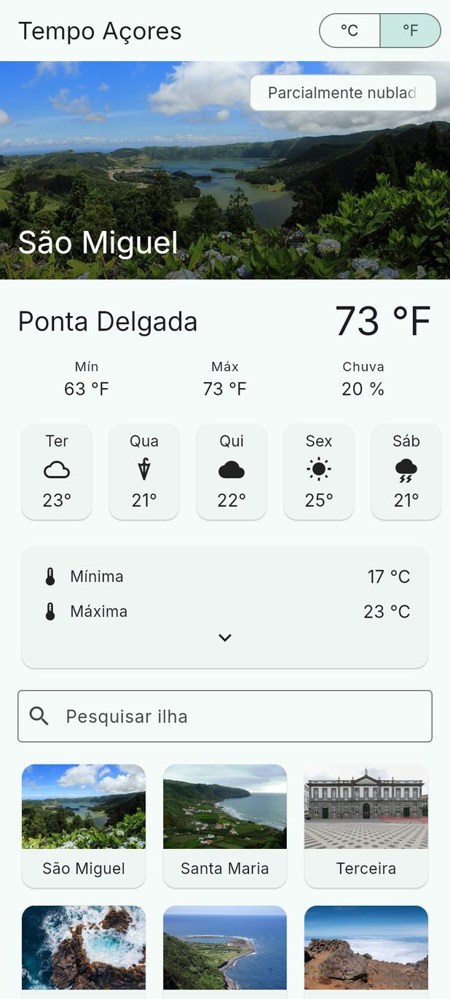
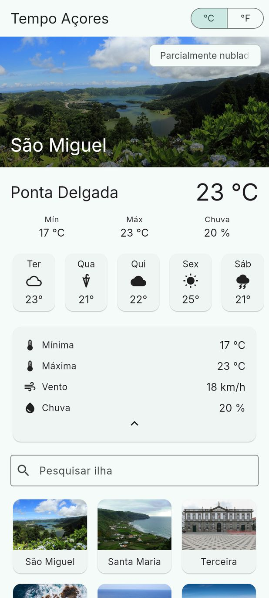

Lesson 08 · Week 5 · Tuesday, 6 October 2026 · 08:30 to 11:30
Theory: what state is in an app, where it should live, and a comparison of setState, Provider, BLoC and Riverpod. Practice, on the screen from last lesson: a card that opens and closes, the °C/°F unit, a search on the islands grid and a form with validation.
setState, Provider, BLoC and Riverpod and choose with judgement.StatefulWidget and use initState, setState and dispose correctly.
1 2 3 4 5ForecastScreen the whole screen, parent of all the others.CurrentConditions the current temperature.DaysRow → DayChip the five days.DetailCard min, max, wind and rain._expandedreads the unitIslandsGrid the search and the islands grid._searchAlertsForm further down, off screen.For the tests: ephemeral state stays in the widget with setState; app state lives outside the tree and is shared.

1 2 3 4ForecastScreen keeps _fahrenheit and changes it with setState when you tap °F.CurrentConditions receives fahrenheit in its constructor and shows 73 °F.DaysRow for DayChip to show °F, DaysRow would have to receive fahrenheit only to pass it on.DetailCard still in °C: one more constructor to change.AppBar of ForecastScreen and used in CurrentConditions, in DetailCard and in DayChip, which sits inside DaysRow.setState alone, the variable has to live in the common ancestor (ForecastScreen) and travel down by parameter, constructor by constructor. DaysRow ends up receiving the unit only to hand it to DayChip. In a bigger app it is five or six levels: this is called prop drilling.setState in ForecastScreen rebuilds the whole screen, not just the texts with temperatures.The answer to this problem is why state management libraries exist. They all solve the same thing: put the state somewhere reachable and rebuild only whoever reads it.
setState: when it is enough and when it stops being enough
rebuild: only DetailCardsetState in DetailCard (step 1): only the card runs build again.
setState in ForecastScreen (step 2): the whole screen runs build again, even the grid and the form.
build rebuilds a large tree because of one boolean.For the tests: setState marks the widget as dirty and schedules a rebuild of its subtree on the next frame. It does not rebuild the whole app, but it rebuilds everything below.
class UnitSettings extends ChangeNotifier {
bool fahrenheit = false;
void toggle() {
fahrenheit = !fahrenheit;
notifyListeners(); // tells every widget that watches
}
}
// in a widget that shows temperatures: rebuilds when the unit changes
final fahrenheit = context.watch<UnitSettings>().fahrenheit;
// in the °C/°F button: only calls it, no need to rebuild
onSelectionChanged: (_) => context.read<UnitSettings>().toggle(),InheritedWidget is Flutter's own mechanism to put a value in the tree and let any descendant read it through context. The Theme.of(context) we use in every build is exactly this.ChangeNotifier is a class with notifyListeners(). Your state extends it and calls notifyListeners() whenever it changes, like UnitSettings in the block above.Provider combines the two: it puts the notifier in the tree, and context.watch<UnitSettings>() rebuilds only the widget that called it when notifyListeners fires.DayChip reads the unit directly; DaysRow does not even know it exists.For the tests: Provider is an InheritedWidget with sugar; ChangeNotifier tells its listeners; watch rebuilds, read does not.
| Approach | What it adds | When it makes sense |
|---|---|---|
| setState | Nothing: it is Flutter's own | Isolated screen, few widgets, prototypes |
| Provider + ChangeNotifier | An observable object in the tree; watch rebuilds only readers | Several screens share state; small teams; our project |
| BLoC / Cubit | Immutable states in a Stream; every transition predictable and testable; more files | Large teams, strong testing requirements, banking apps |
| Riverpod | Global, typed providers, no BuildContext; errors caught at compile time | Those who already know Provider and want more safety |
Underneath they all do the same thing: an object that holds state and tells whoever is watching. The difference is in the ceremony and the guarantees.
setState). A board in the kitchen that the whole house checks and that tells you when it changes (ChangeNotifier with Provider). A logbook with every change, dated and signed (BLoC: events and states). The board is enough for most homes.ForecastScreen State, with setState.
build runs again and draws 73 °F.
// 1. action: the tap calls the callback, which asks for the change
onSelectionChanged: (s) => setState(() => _fahrenheit = s.first),
// 2. state: the value lives in one place only, the ForecastScreen State
bool _fahrenheit = false; // the state lives in the State, not in the widget
// 3. UI: build runs again and the new value goes down by parameter
child: CurrentConditions(fahrenheit: _fahrenheit),CurrentConditions receives fahrenheit and only shows it: it has no way to change it. Whoever keeps it changes it._fahrenheit you always see the same screen. That is what makes bugs easy to reproduce.copyWith). The final fields of DayForecast in lib/data.dart already work this way. BLoC and Riverpod take this all the way.For the tests: unidirectional flow is action → state → UI; immutability means creating copies with copyWith instead of changing objects.
setState. Several: Provider or beyond.setState for ephemeral state and Provider with ChangeNotifier for the rest: it is simple, it is what Flutter's architecture guide recommends, and it can grow into BLoC later without a rewrite.setState. Provider comes in lesson 13, when we have API data to share.git clone https://github.com/Tiago-Rocha/pdm-aula-08.git
cd pdm-aula-08
flutter pub getpdm-aula-08 folder in VS Code. It is the app from the end of lesson 7, plus an alerts form at the bottom of the screen. You work in lib/forecast_screen.dart and lib/alerts_form.dart, at the comments TODO 1 to TODO 4.Android will not start? It is nearly always the Java that Gradle is using: see the common problems in the setup guide and call the teacher. Meanwhile, follow the lesson in Chrome: all of today's steps work the same in the browser.
class DetailCard extends StatefulWidget {
const DetailCard({super.key});
@override
State<DetailCard> createState() => _DetailCardState();
}
class _DetailCardState extends State<DetailCard> {
bool _expanded = false;
@override
Widget build(BuildContext context) {
// ... the build from before, which can now read and change _expanded
}
}State object, which Flutter creates once and keeps alive between rebuilds. That is why hot reload does not lose what is on screen.setState(() { ... }) does two things: it runs the change and marks the widget to rebuild on the next frame. Changing the variable without setState changes the value, but the screen does not follow.StatefulWidget sits, the less work._expanded live in _DetailCardState and not in DetailCard? What happens if you do _expanded = !_expanded without setState?// Hint: Ctrl+. on "DetailCard" → Convert to StatefulWidget
bool _expanded = false;
return Card(
clipBehavior: Clip.antiAlias, // keeps the ripple inside the corners
child: InkWell(
onTap: () => setState(() => _expanded = !_expanded),
child: Padding(
padding: const EdgeInsets.all(16),
child: Column(
children: [
// Mínima and Máxima, as they are
if (_expanded) ...[
// Vento and Chuva, each with the SizedBox before it
],
Icon(_expanded ? Icons.expand_less : Icons.expand_more),
],
),
),
),
);DetailCard into a StatefulWidget with the VS Code shortcut, add the _expanded field, wrap the Padding in an InkWell and put the wind and rain lines inside if (_expanded) ...[ ].In the app: the card starts with only the minimum and maximum and a down arrow; a tap shows the wind and rain and the arrow turns up; another tap closes it.
CurrentConditions shows temperatures, but the button to choose it sits in the AppBar, which belongs to ForecastScreen.setState rule: state lives in the closest common ancestor of whoever changes it and whoever shows it. Here that is ForecastScreen, which becomes a StatefulWidget.final field, the way DayChip receives its forecast. It keeps nothing.SegmentedButton is a controlled widget: it shows what is in selected and reports in onSelectionChanged. Switch, Checkbox and Slider work the same way.CurrentConditions shows °F. What about the days row and the detail card? What would we have to change for DayChip to show °F as well?git stash -u
git checkout passo-1
flutter pub get// Hint: Ctrl+. on "ForecastScreen" → Convert to StatefulWidget
bool _fahrenheit = false; // the state lives in the State, not in the widget
appBar: AppBar(
title: const Text('Tempo Açores'),
actions: [
SegmentedButton<bool>(
segments: const [
ButtonSegment(value: false, label: Text('°C')),
ButtonSegment(value: true, label: Text('°F')),
],
selected: {_fahrenheit},
showSelectedIcon: false,
onSelectionChanged: (s) => setState(() => _fahrenheit = s.first),
),
const SizedBox(width: 8),
],
),const CurrentConditions({super.key, required this.fahrenheit});
final bool fahrenheit; // chosen in ForecastScreen, received here
String temp(double c) =>
fahrenheit ? '...' : '${c.round()} °C';
// and in the ForecastScreen ListView:
child: CurrentConditions(fahrenheit: _fahrenheit),ForecastScreen, put the SegmentedButton in the AppBar actions, add the fahrenheit parameter to CurrentConditions and pass it _fahrenheit. In place of the '...', the conversion: °F = °C × 9 / 5 + 32, rounded, with °F at the end.In the app: you press °F and the big 23 °C becomes 73 °F, the minimum 63 °F and the maximum 73 °F. The days row stays in °C.
late final TextEditingController _search;
@override
void initState() {
super.initState(); // once, before the first build
_search = TextEditingController();
}
@override
void dispose() {
_search.dispose(); // what initState creates, dispose frees
super.dispose();
}| Method | When it runs | What for |
|---|---|---|
initState | Once, when the State is created | Create controllers, subscribe to streams, fire the first request |
build | Whenever drawing is needed | Only describe the UI. No network requests here |
didUpdateWidget | When the parent rebuilds with new parameters | React to a parameter that changed (a new location selected) |
dispose | Once, when the widget leaves the tree | Release controllers, timers, subscriptions, focus nodes |
build? And what happens if you forget dispose?For the tests: whatever you create in initState you release in dispose; build can run many times and must have no side effects.
TextEditingController holds the box's text. You need it to read the text somewhere else, clear it (X button) or set an initial value. And then, dispose.onChanged runs on every key press. As the text is already in the controller, you only need to ask for a rebuild: setState(() {}).Timer).InputDecoration controls the look: prefixIcon, suffixIcon, hintText, labelText, border and error text.git stash -u
git checkout passo-2
flutter pub get// Hint: Convert to StatefulWidget, plus the controller from the previous slide
List<Island> get _filtered => islands
.where((i) => '...')
.toList();
// in build: a Column with the TextField on top and the GridView below
child: TextField(
controller: _search,
decoration: InputDecoration(
prefixIcon: const Icon(Icons.search),
hintText: 'Pesquisar ilha',
border: const OutlineInputBorder(),
// suffixIcon: null with no text; with text, an IconButton that clears
),
onChanged: (_) => setState(() {}), // the text is in _search
),
// and the GridView shows only the filtered ones:
children: [for (final i in filtered) IslandCard(island: i)],IslandsGrid, create the controller in initState and release it in dispose, and write the where condition in place of the '...': the island name contains the text, ignoring case. Then the clear button (Icons.clear, _search.clear) and, with no results, the text 'Nenhuma ilha encontrada'.In the app: you type "ter" and only Terceira is left; an X appears that clears it and brings back all nine; "xyz" shows "Nenhuma ilha encontrada".
final _formKey = GlobalKey<FormState>(); // a field, never inside build
final _email = TextEditingController();
void _submit() {
// validate() runs every validator and shows the errors
if (_formKey.currentState!.validate()) {
ScaffoldMessenger.of(context).showSnackBar(
SnackBar(content: Text('Avisos enviados para ${_email.text}')),
);
}
}
child: Form(
key: _formKey,Form groups fields; the GlobalKey<FormState> gives the button access to the form. It is one of the few legitimate uses of GlobalKey.TextFormField has a validator that returns the error message, or null if the value is fine. validate() runs them all, shows the errors under the fields and returns true if none failed.autovalidateMode: AutovalidateMode.onUserInteraction validates each field while the user types in it. Without it, validation only happens on submit.keyboardType: TextInputType.emailAddress and textInputAction: TextInputAction.next change the phone keyboard. On mobile, that is UX.validate() return true?For the tests: a validator returns null when the value is valid and a String with the error when it is not.
git stash -u
git checkout passo-3
flutter pub get// on the Form, below the key:
autovalidateMode: AutovalidateMode.onUserInteraction,
// on the Nome field:
validator: (v) {
if (v == null || v.trim().isEmpty) return 'Obrigatório';
// and with fewer than 3 letters: 'Pelo menos 3 letras'
return null; // null means valid
},
// on the E-mail field:
keyboardType: TextInputType.emailAddress,
// and a validator: 'Obrigatório', and 'E-mail inválido' with no @ or no dotvalidators, add autovalidateMode to the Form and keyboardType to the e-mail.In the app: "Subscrever" with empty fields shows "Obrigatório" under both and no SnackBar; "Ana" and "ana@uac.pt" show "Avisos enviados para ana@uac.pt". On the phone, the e-mail field opens the keyboard with @.
DetailCard: a StatefulWidget with _expanded, opening and closing on tap (step 1).ForecastScreen: keeps the unit in _fahrenheit and passes it as a parameter to CurrentConditions (step 2). The days row is still in °C: that is the cost of passing by parameter.IslandsGrid: search with a controller created in initState and released in dispose, filtered list computed in a getter (step 3).AlertsForm: a Form with a GlobalKey, one validator per field and autovalidateMode (step 4).All of this is ephemeral state, and setState is enough. The passo-4 branch is the final state: compare your code with it.
passo-4 branch: git stash -u and then git checkout passo-4.onChanged and TextEditingController.